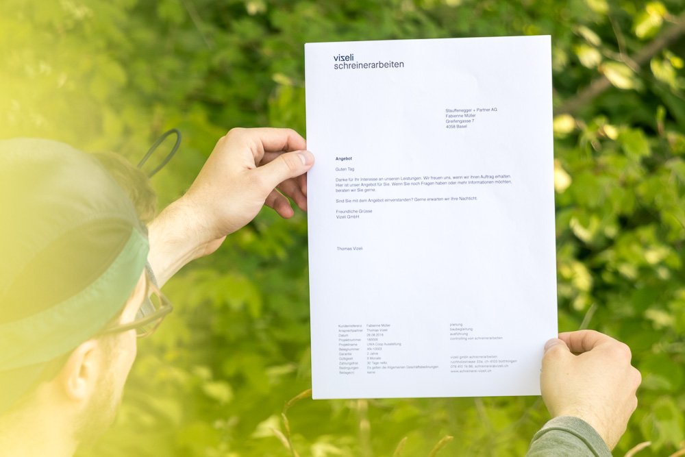

Vizeli Schreinerarbeiten
Konzept, Gestaltung und Umsetzung
Konzept, Gestaltung und Umsetzung eines neuen visuellen Auftrittes für Vizeli Schreinerarbeiten.
Vizeli wird nicht «Wizeli», sondern «Wiseli» ausgesprochen.
Diese Kleinigkeit inspirierte mich dazu, das «z» in Vizeli in ein «s» zu spiegeln.
Somit entstand eine rein typografische Lösung mit Charakter und starkem Bezug zum Betrieb.
